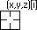

他の方法でデータポイントに選択的にラベルを付けるには、作図の詳細の指定されたポイントでのみ表示の設定を使用します。
2Dグラフのグローバルラベリング（個々のデータポイントへのラベル付けも）については、ラベルタブまたはミニツールバーを使ってプロットにラベル付けを参照してください。
2Dグラフおよび等高線図上の特定の点にラベル付けするには、編集可能なデータラベルツールを使用できます。
他の方法でデータポイントに選択的にラベルを付けるには、作図の詳細の指定されたポイントでのみ表示の設定を使用します。 |
2D XYデータプロット
等高線図
| データラベル形式 | データカーソル |
|---|---|
| （X座標値、Y座標値、Z座標値） | |
| （X座標値、Y座標値、Z座標値）[行インデックス番号] |  |
| (X座標値、Y座標値、Z座標値) [行インデックス番号] [列インデックス番号] | |
| X座標値 | |
| Y座標値 | |
| Z座標値 | |
| インデックス番号（行番号） | |
| (インデックス番号(行番号)、インデックス番号(列番号) ) |
データプロットのデータポイントを選択する時、データプロット上でクリックして、 キーボードの← または → を押すと、隣接するポイントに移動できます。 |
既存のラベルを編集するには、ラベル上で右クリックして、プロパティを選択します。これによりラベルダイアログボックスが開きます。
標準のデータラベルの形式のほかに、テキストとLabTalk変数を組み合わせたカスタムラベル形式を追加することができます。カスタム文字列を定義した場合、それはTABキーのラベル付けオプションの1つになり、「Custom」タグで識別できます。

カスタムラベルを作成する方法
このサンプルでは、軸ダイアログボックスの数式ボックスを使ってカスタム目盛ラベルを作成し、データラベルをカスタマイズして、実際のYの値の代わりに数式の値を表示します。
x*pi を入力してOKをクリックする。入力された数式により、Y 軸の目盛ラベルが調整されます。$(x), $(y,y)を入力して、デフォルトに設定ボタンをクリックしてから、ダイアログボックスを終了します。ラベルには、Y軸の式で調整された値が正しく表示されるようになりました。Y軸主目盛ラベルフォーマットでラベルを表示する場合は、$(x), $(y,yt)と入力します。セルの値や文字列にデータラベルを付けるだけでなく、埋め込み画像をデータラベルとして表示することもできます。
データラベルツールで作成されたラベルは、置換を使用して数値またはテキスト文字列を表示するテキストオブジェクトです。 そのため、ここで説明されている以上のカスタマイズをサポートしています。詳細は、プロットラベルで使用されるシンタックスと表記法およびテキストラベル置換をご参照ください。どちらもLabTalkプログラミングに記載しています。 |